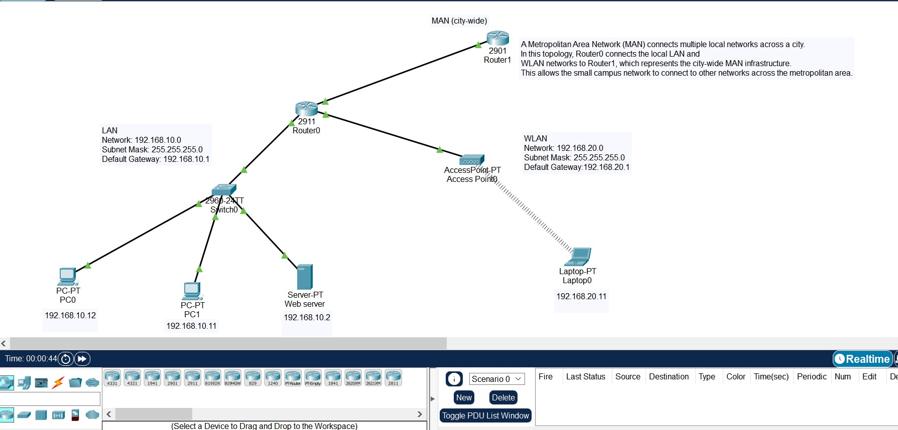
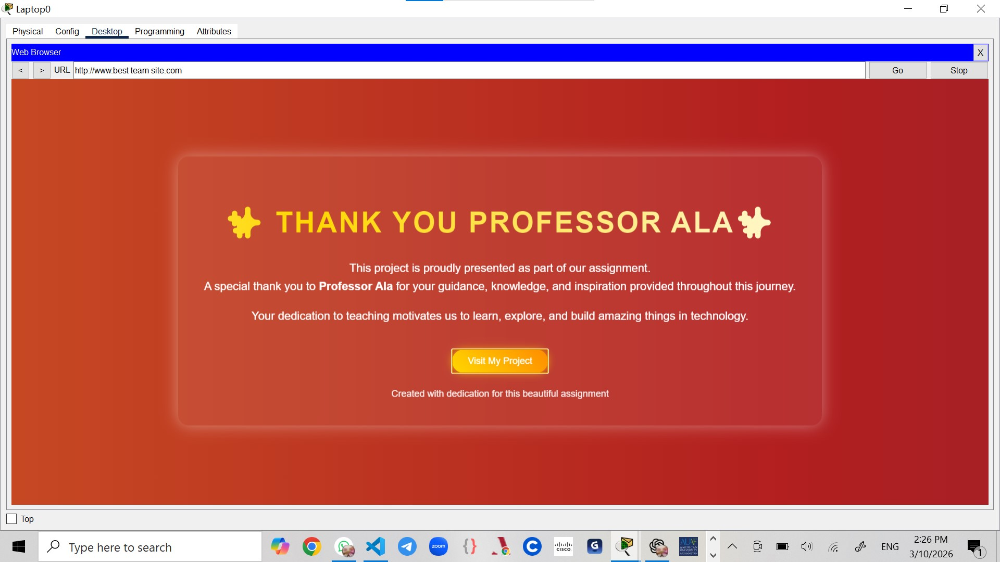
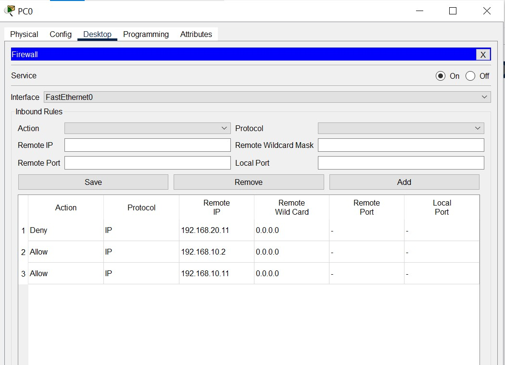
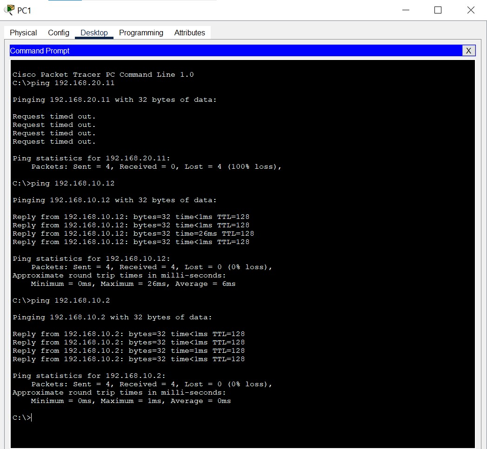

Design and configuration of a simulated computer network using Cisco Packet Tracer.
Aqila Mohammadi • Lida Fakhri • Sara Ibrahimi • Zahra Zarrin
Instructor: Dr Ala | March 2026
The topology shows how network devices are connected. A router links the wired LAN and the wireless WLAN networks while also connecting to a Metropolitan Area Network (MAN) that represents a larger city-wide network.

Network: 192.168.10.0 /24
Gateway: 192.168.10.1
Network: 192.168.20.0 /24
Gateway: 192.168.20.1
The server is configured as a web server by enabling HTTP service. This allows users inside the network to access the hosted website through a web browser.

Interface: G0/0
IP Address: 192.168.10.1
Subnet Mask: 255.255.255.0
Interface: G0/1
IP Address: 192.168.20.1
Subnet Mask: 255.255.255.0
The wireless network is secured using WPA2-PSK authentication. Only users with the correct password are allowed to connect to the wireless network.
A basic firewall rule was configured on the router using an Access Control List (ACL). ACLs filter traffic and help control which data is allowed or denied in the network.

Ping tests were performed between devices to verify communication across the network. Successful replies confirm that routing between LAN and WLAN networks works correctly.

A Metropolitan Area Network connects multiple local networks across a city. In this project, the router connects to a MAN cloud representing the external network or the Internet.
This assignment helped us understand how routers, wireless networks, IP addressing, and firewall security work together to create a functional computer network.
Thank you for your attention.
Questions?